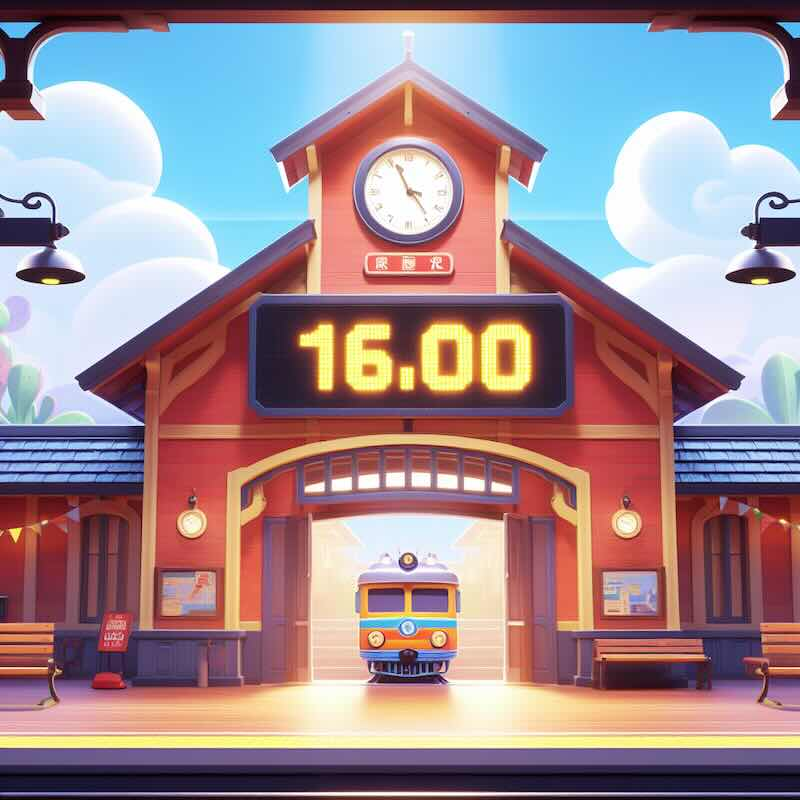

LEVEL 8: SELECTION
Let's build a program to convert standard 12-hour clock times (with am or
pm) to their 24-hour equivalents!

Write a program to ask for hours (1-12), minutes (0-59), and period ("am" or "pm").
Then print the converted 24-hour time in the format HH:MM.
Rules for conversion:
Start building your clock converter here:
hours = int(input("Hours (1-12): "))
minutes = int(input("Minutes (0-59): "))
period = input("am or pm: ")
# Write your selection statements below to convert hours and print
Can you expand your program so that it is able to convert in either direction (both 12-hour to 24-hour, and 24-hour back to 12-hour)? Give it a try!
Need help? Read the Code Reference Guide.